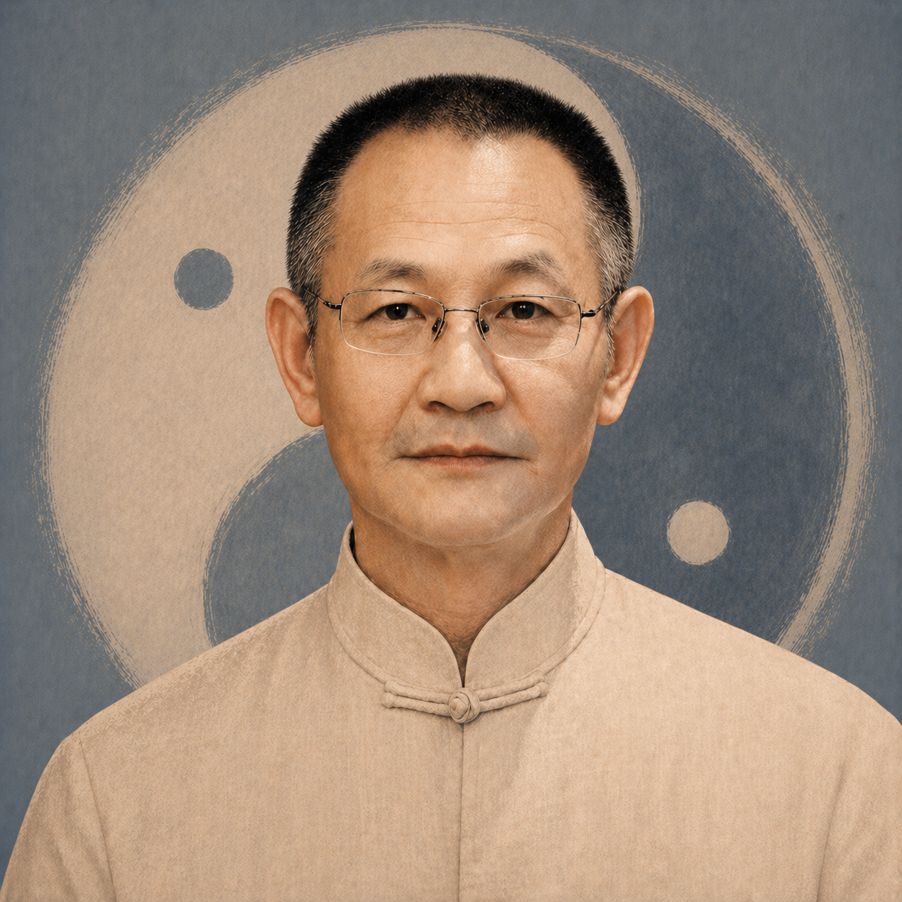
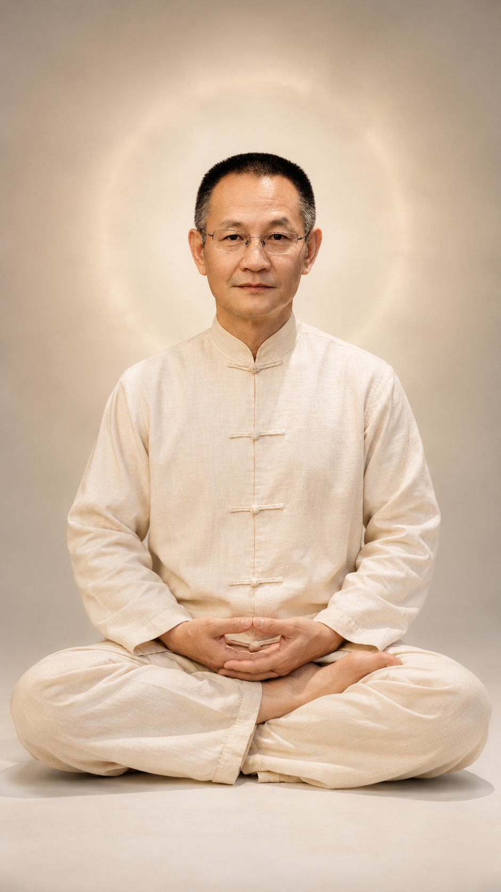

收神，不是逃避世界
收神不是压制情绪，也不是追求特殊体验。它是把一个人被手机、焦虑、欲望、恐惧、杂念牵走的注意力，一点一点收回来。
About
老道覃宏，传统文化与心神管理实践者。
多年研习道家修炼、静坐、导引、传统修身方法，长期关注现代人在快节奏生活中的心神散乱、焦虑、失眠、专注力下降与精神内耗问题。
他不主张把传统文化讲得玄而又玄，也不把修行变成遥不可及的概念。他更关注一件事：一个普通人，如何在现实生活中，把散掉的心收回来，把乱掉的神安下来，把该做的事情重新做稳。

Shou Shen Ji
现代人的心神，常常不是坏了，而是散了。
收神不是压制情绪，也不是追求特殊体验。它是把一个人被手机、焦虑、欲望、恐惧、杂念牵走的注意力，一点一点收回来。
收神记关注的不是神秘体验，而是一个人如何重新拥有稳定、清明和定力。它从身体、呼吸、注意力和生活节律入手，让练习回到日常。

静坐不是把自己放到生活之外，而是在身体、呼吸和注意力中，重新建立安定的起点。
Courses
课程设计以可理解、可练习、可持续为原则，不承诺奇效，只帮助学员建立稳定的练习路径。
适合人群
心神散乱、容易焦虑、睡前脑子停不下来、长期刷手机停不下来、做事难以持续的人。
课程目标
理解心神散乱的原因，掌握基础收神方法，建立每日可坚持的练习路径。
适合人群
注意力下降、工作效率低、学习难以深入、容易被手机和信息流牵走的人。
课程目标
通过静坐、呼吸、身体觉察、行为训练，重新建立专注力和执行稳定性。
适合人群
想系统接触传统修身方法，学习静坐、导引、意守等基础训练的人。
课程目标
把传统修身方法转化成现代人可以理解和实践的训练体系。
适合人群
需要个人状态诊断、定制练习方案、持续陪伴和纠偏的人。
课程目标
根据个人状态，制定更适合自己的收神、静坐、专注力和身心稳定训练方案。
不确定适合哪一类课程，可以先扫码咨询当前安排。
咨询课程Notes
这里用于展示思想文章、短视频内容、课程笔记和经验总结。
Feedback
反馈只保留温和、真实、可公开展示的表达，不写成治病案例，也不承诺效果。
练习后，睡前比以前安静了一些，开始知道怎么把注意力收回来。
基础课学员反馈
以前总觉得自己没毅力，后来发现是心神太散，需要先学会收束。
专注力训练学员反馈
对手机的依赖感有所下降，做事比以前更能坐得住。
练习记录节选
Background
云南中华周易研究会
曾任副会长、秘书长。
昆明易经研究会
曾任副会长、秘书长。
中国医学气功学会
会员。
国家健身气功指导员
参与传统身心修习和健身气功相关推广。
长期传统文化实践
研习道家修炼、静坐、导引、医学气功、祝由文化与身心调理方法。
Contact
课程咨询：扫码添加微信了解当期课程安排。
内容合作：欢迎传统文化、身心成长、课程共创方向合作。
线下课程：以当期公告为准。
社群加入：可通过微信咨询。
视频内容：打开老道视频号。
文章阅读：打开公众号文章。